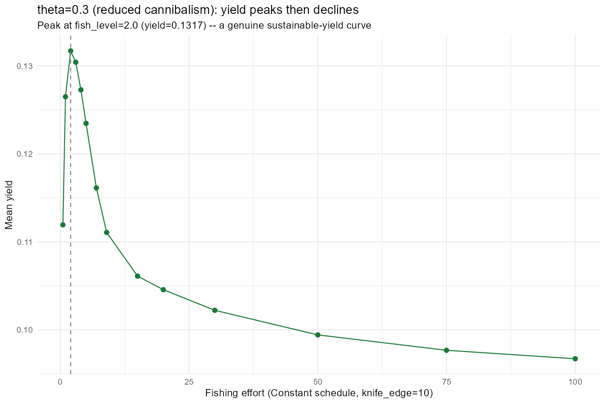
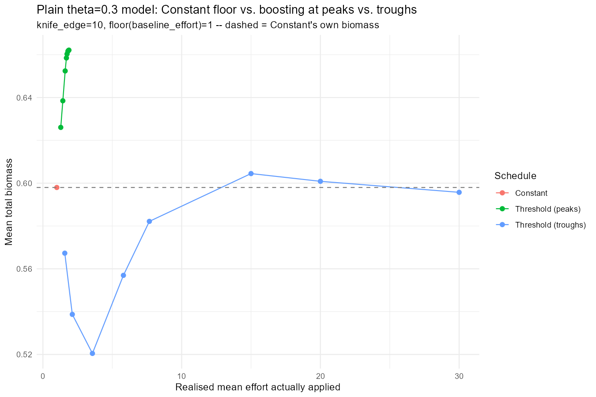
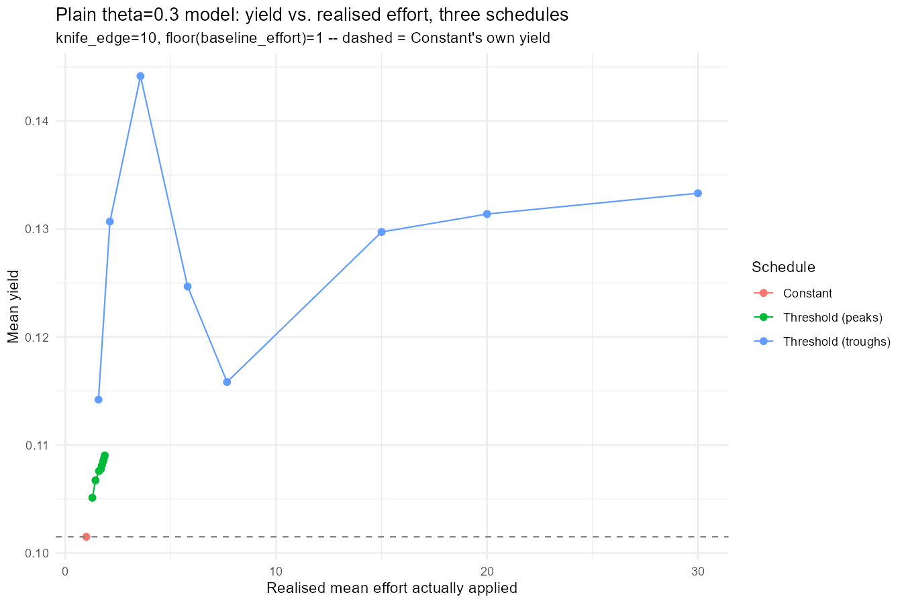
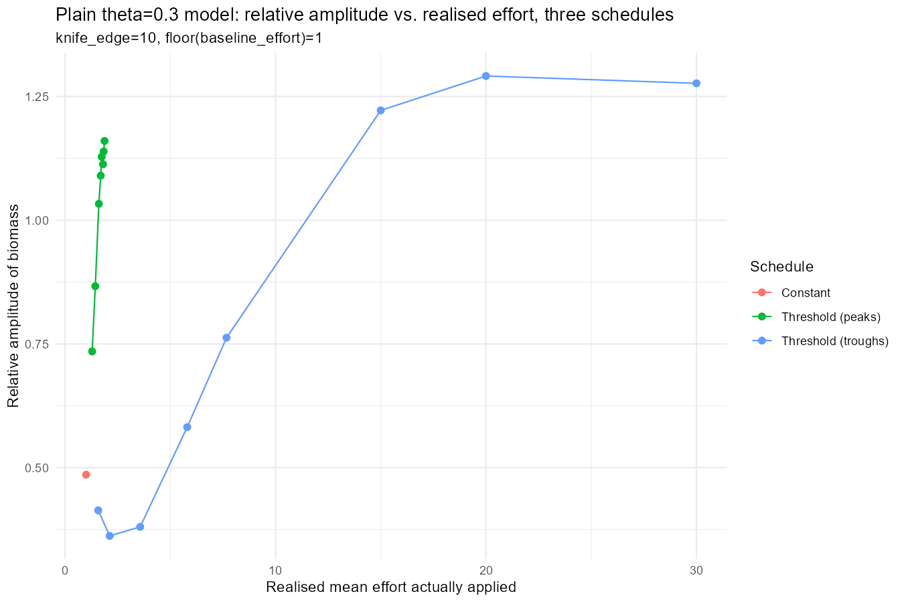
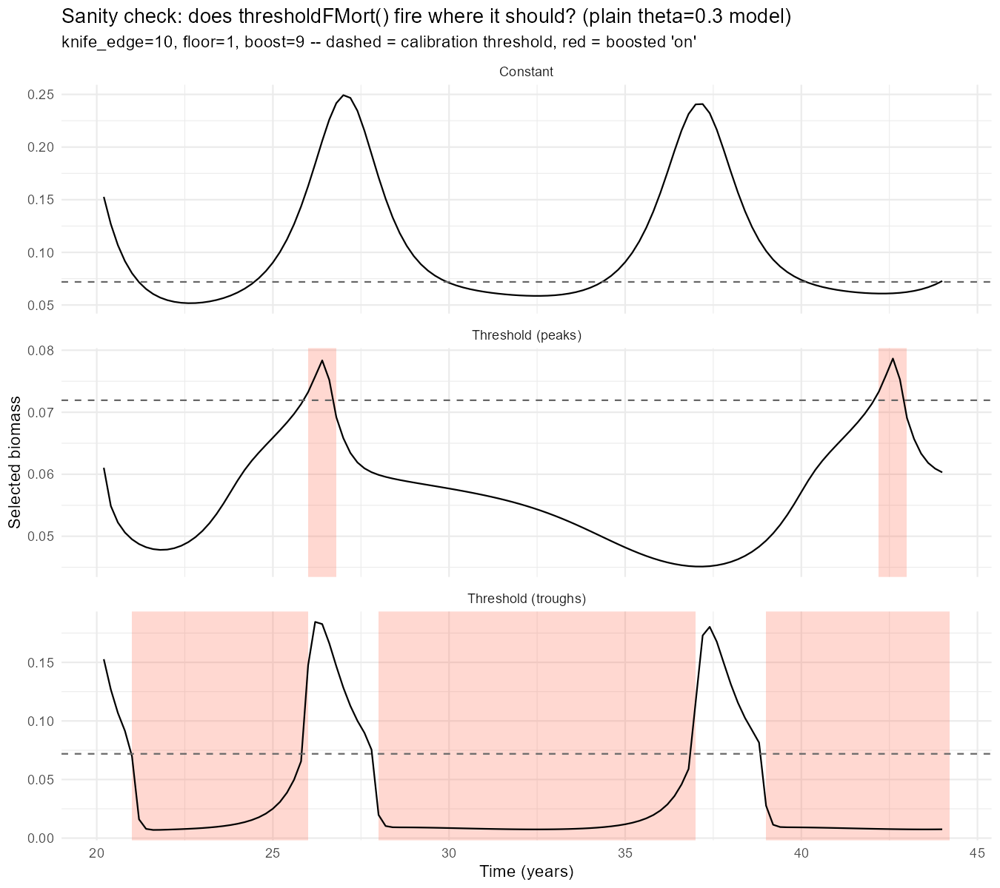
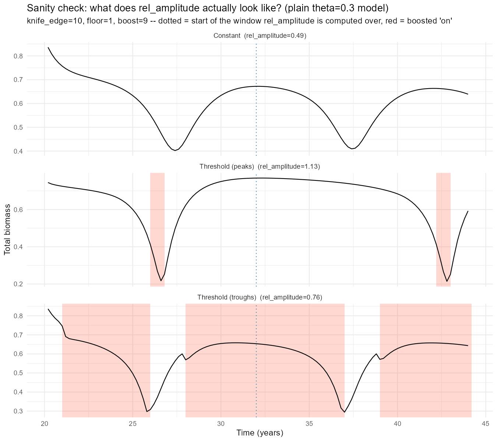
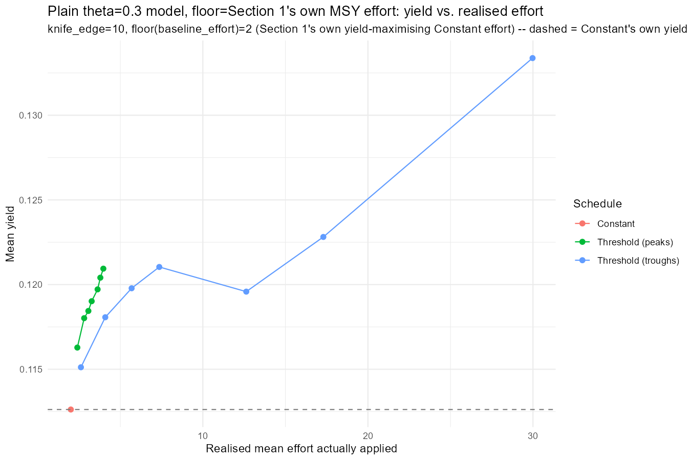
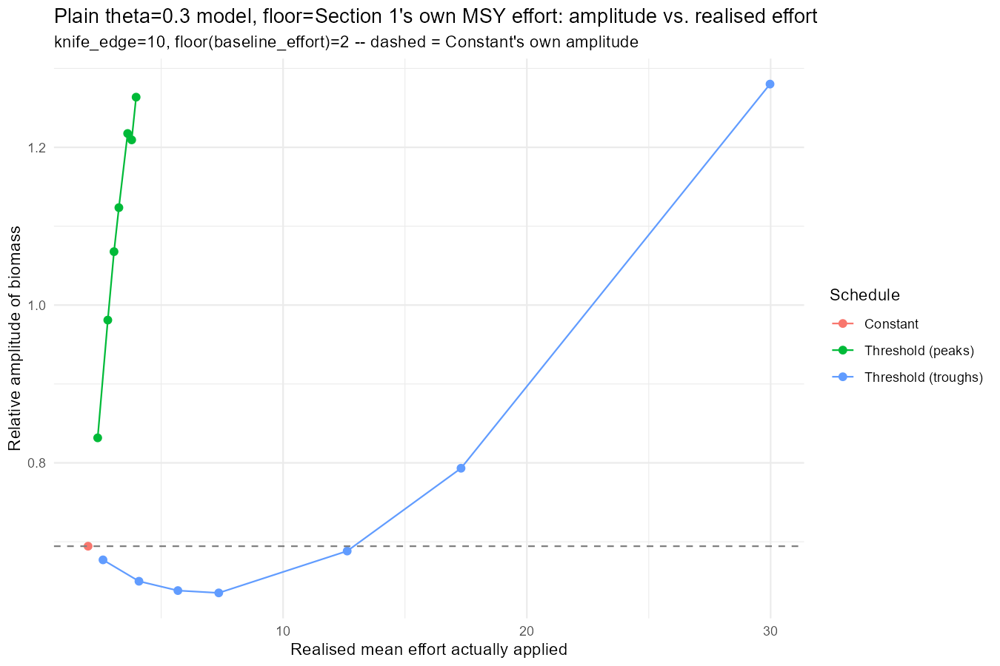
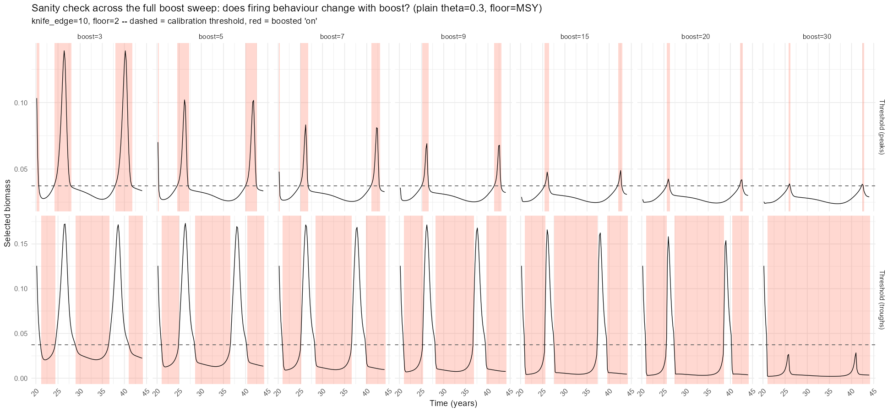
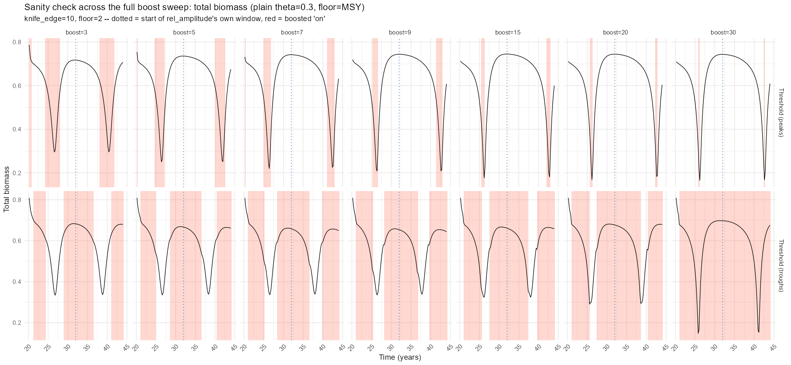

Day 40: The Model That Peaks, Tested Against Its Own MSY
The Brief
Day 39 closed with a candidate the project’s aim had been chasing since Day 38: theta=0.3 (cannibalism cut to 30% of the baseline), interaction_resource left alone, gear at knife_edge=10 – the one configuration whose yield genuinely peaked and then declined with Constant fishing effort, rather than climbing forever the way the theta=1 baseline does out to fish_level=100. That result came from a coarse grid (1,3,5,7,9,20,...), and it had never been tested against a peaks/troughs fishing schedule at all – Day 39’s own layered-schedule comparisons (Sections 4/5) ran only on the resource-boosted variant and the original model. Today’s finding_jams/40_experiments.R does three things: pin the peak down properly, build the three-schedule comparison Day 39 skipped, and then redo it with the floor set to the number that comparison should have used from the start – the model’s own MSY effort, not an arbitrary constant.
Section 1: Sharpening the Peak
Day 39’s own grid placed the turnover “around fish_level=3” – the coarseness of 1,3,5,7,9,... couldn’t say much more than that. A finer grid concentrated near that region (0.5,1,2,3,4,5,7,9,15,20,30,50,75,100) pins it down properly.

The peak sits at fish_level=2 (mean_yield=0.1317), not 3 – Day 39’s grid happened to sample close enough to look right without actually landing on it. From there yield declines smoothly and monotonically all the way to 0.0967 by fish_level=100: a clean, single-peaked sustainable-yield curve, the thing this project’s aim has been asking for since Day 38.
Section 2: Does a Peaks/Troughs Schedule Change the Picture?
Day 39’s threshold-schedule machinery (thresholdFMort(), Day 36/38’s own rate-function rule: a Constant floor everywhere, boosted fishing layered on top only when selected biomass crosses a calibration threshold, “above” for peaks or “below” for troughs) had never been run on the plain theta=0.3 model – only on the resource-boosted variant and the original. First pass: floor (baseline_effort) =1, boosts c(2,3,5,7,9,15,20,30), knife_edge=10 – the same gear as Section 1’s own peak.

Neither schedule damages the population anywhere in this range. Mean total biomass for “Threshold (peaks)” sits at or above Constant’s own 0.598 throughout (0.626-0.662); “Threshold (troughs)” dips as low as 0.521 at low boost but climbs back to 0.596-0.603 by boost 15-20, still close to Constant. Relative amplitude tops out around 1.28 (troughs, boost=30) – nowhere near the ~2.0 near-extinction ceiling Day 39 found in the original model’s own troughs cliff-edge.

The yield picture has a genuine surprise in it: “Threshold (troughs)” at boost=5 (realised mean_effort=3.57) hits mean_yield=0.1441 – the single best point in the whole table, beating every “peaks” value and every other “troughs” value including the higher-boost ones. Not a monotonic climb-then-plateau; a real local optimum in the middle of the range.

The amplitude picture is where the two schedules actually diverge. “Peaks” amplitude rises smoothly from 0.74 at boost=2 to a plateau around 1.1-1.16 by boost=9 and stays there – consistent with the sanity check above: the cycle shape is basically fixed, only the on-window narrows. “Troughs” is flat and low through boost=9 (0.41-0.76, close to or below Constant’s own 0.49), then jumps sharply to 1.22-1.29 between boost=9 and boost=15 – a late, sudden rise rather than a gradual climb, the same shape of warning sign Day 39 found before the original model’s own troughs cliff-edge, just at a far lower ceiling here.
Sanity Check: Is It Actually Firing Correctly?
Same convention as every threshold-schedule day since Day 36: one representative case (boost=9), all three schedules, selected biomass plotted with the boosted “on” periods shaded.

Both fire exactly as designed. “Peaks” shading lands precisely on the narrow local maxima of the Constant-schedule cycle. “Troughs” shading covers the broader sub-threshold stretches but – unlike Day 39’s finding on the resource-boosted model, where troughs got stuck functionally-always-on because the population never recovered above threshold once boosted fishing started – here it genuinely cycles on and off multiple times across the run. The plain theta=0.3 model’s own dynamics recover fast enough that troughs fishing doesn’t just collapse into Constant-at-boost.
rel_amplitude is computed from total biomass over the summary window, not the selected biomass the rule triggers on – worth checking separately rather than assuming the same story holds.

At boost=9: Constant’s own regular cycle gives rel_amplitude=0.49; troughs, spreading pressure out over a longer stretch, gives a shallower dip at 0.76; peaks gives the highest, 1.13 – not because its mean biomass is low (it isn’t), but because the brief boosted window lands exactly at the cycle’s peak and produces a sharp crash-and-recover right after it, visible directly in the total-biomass trace.
Section 3: Redone at the Model’s Own MSY Floor
Section 2’s floor of 1 was arbitrary – picked to match Day 39 Section 6’s own convention, not because it means anything for this model. Section 1 above already found the number that does: fish_level=2, this model’s own yield-maximising Constant effort. Re-running Section 2’s comparison with baseline_effort pinned to that value, rather than an arbitrary floor, is the fairer test of what a threshold schedule buys on top of already-optimal constant fishing.

Both schedules beat Constant-at-MSY on yield across the entire boost range tested (3 to 30): Constant’s own 0.1126, against peaks’ 0.1163-0.1209 and troughs’ 0.1151-0.1334. Layering a threshold boost on top of the model’s own best constant effort is not wasted pressure – it recovers additional yield rather than just adding variance around the same mean.

Amplitude repeats Section 2’s own pattern almost exactly, just shifted onto the higher floor: “peaks” climbs smoothly from 0.83 at boost=3 to 1.26 by boost=30, no sudden jumps. “Troughs” stays essentially flat and close to Constant’s own 0.69 all the way through boost=15 (0.68-0.69), ticks up to 0.79 at boost=20, then jumps sharply to 1.28 at boost=30 – and that jump lands on exactly the same boost level where the sweep sanity check below shows the compositional shift. The amplitude-vs-effort plot alone would have flagged boost=30 as the point where something changes; the boost-swept sanity check is what explains what changes there.
Sanity Check, Swept Across Every Boost Level
Section 2’s sanity check only ever looked at one representative boost. run_layered_ke_case() was extended into run_layered_ke_case_with_series() so the same simulations that build the summary table also capture the full selected/total biomass and on_frac time series for every boost level – no separate re-run needed to sweep the sanity check across the whole range.

Reading the selected-biomass grid left to right: “peaks” (top row) stays essentially the same cycle shape throughout, just with an increasingly brief, increasingly self-limited firing window as boost climbs from 3 to 30. “Troughs” (bottom row) tells a different story – as boost approaches 30, the selected-biomass panel crashes toward zero and stays there for most of the run, a visibly different regime from the lower-boost panels next to it.

The total-biomass version of the same grid resolves what that crash actually is. Every panel – including troughs at boost=30, where the selected-biomass panel looked collapsed – keeps cycling at a comparable range to every other boost level. Nothing here is a population collapse. It’s a compositional shift: sustained pressure on the harvestable-size compartment relieves whatever residual predation theta=0.3 still provides on juveniles, and the juvenile population booms into the space that opens up – the same cultivation-effect-in-miniature mechanism Day 39 Section 6 found at knife_edge=5, confirmed here at knife_edge=10 and this model’s own MSY floor. Total biomass, mean yield, and mean selected-biomass numbers alone (Section 3’s own summary table) would never have shown this distinction; only looking at the actual time series, swept across the boost range rather than sampled at one point, makes it visible.
A Caveat Worth Flagging
Section 3’s own Constant-at-MSY row reports mean_yield=0.1126 at fish_level=2 – noticeably below Section 1’s own peak value of 0.1317 at the same effort. The two sections sample different, non-overlapping stretches of the same roughly 5-6 year cycle: Section 1 projects 12 years from the fork and keeps the last 6; Section 3 (reusing Day 39’s own run_layered_ke_case() convention) projects 24 years and keeps the last 12. Neither window is wrong on its own, but they land on different phases of a population that isn’t exactly periodic, and the two numbers aren’t directly comparable as a result. The schedule comparisons within Section 3 are still apples-to-apples – every row in that table shares the same window – so the qualitative findings above (both schedules beat Constant, troughs shows a compositional shift not a collapse) aren’t affected. But the absolute “Constant-at-MSY” yield number quoted in Section 3 shouldn’t be read as a precise readout of Section 1’s own peak.
What’s Next
Nothing tested today actually broke this model – every schedule, every boost, every floor tried still left total biomass cycling normally. That’s itself the open question: what, short of the extreme high-effort regime Day 39 used on the original model, would actually collapse the plain theta=0.3 model under fishing? A few concrete angles on that, beyond the general follow-ups below:
- Sweep
knife_edge_sizeitself. Everything today usedknife_edge=10, matched to Section 1’s own peak. Day 39’s collapse-hunting work found gear cutoff changes the fishing-response picture substantially on the resource-boosted and original models; the plaintheta=0.3model hasn’t had that sweep at all. A smaller knife-edge (catching more of the juvenile boom that cutting cannibalism creates) is the most direct lever available for making this model fishing-sensitive again. - Let peaks fishing stay on longer once triggered.
thresholdFMort()’s self-limiting behaviour – the mechanism behind “peaks” never damaging this model even at boost=30 – comes directly fromon_fracreverting to the background level as soon as biomass ticks back below threshold, so the boosted window is only ever as long as the time spent above the trigger. Decoupling that: once triggered, hold the boosted state on for a fixed minimum duration (or until biomass has fallen a fixed amount below the peak, not just below the threshold) rather than reverting the instant the crossing reverses. That removes the self-limiting escape hatch and is a plausible way to find where “peaks” fishing actually can collapse this model, rather than concluding it can’t. - Make the threshold dynamic rather than fixed. Right now
threshold_keis calibrated once, off the Constant-schedule’s own unfished-floor cycle, and held fixed for the whole run. If sustained fishing gradually shrinks the cycle’s peaks over time, a fixed absolute threshold catches a shrinking fraction of each peak – the rule quietly fishes less and less of the population even at a constant nominal boost, which could be part of why nothing collapses here. A threshold that re-calibrates against the recent cycle (a rolling quantile, say, rather than one fixed at t=0) would keep fishing the same relative fraction of each peak as the population declines, which is a much harder test of whether the schedule can actually drive a collapse. - Trigger the schedule off total biomass instead of selected biomass. Every threshold rule tested so far – today included – triggers
thresholdFMort()off selected biomass (f_ref-weighted, effectively the harvestable-size compartment), and “peaks”/“troughs” mean peaks and troughs of that quantity, not of the population as a whole. Section 3’s own boost-swept sanity check found selected and total biomass can diverge sharply under fishing – the troughs=30 case crashed the selected compartment while total biomass kept cycling normally on the back of a juvenile boom. A rule triggered on total biomass instead would be blind to that same compositional shift and would time its boosted fishing off a completely different signal – worth building as a genuinely different schedule, not just a parameter change, to see whether it’s more or less able to collapse this model than the selected-biomass version. - Chase the troughs=5 yield optimum from Section 2. It beat everything else in that sweep, including every point in Section 3’s higher-floor version – worth a finer boost grid around it to see whether it’s a genuine local maximum or an artefact of the particular boost values tested.
- Reconcile the sampling-window mismatch. Section 1’s
cannibalism_fishing_probe()and Section 3’srun_layered_ke_case()use different post-fork run lengths and different summary windows – worth standardising on one convention so numbers across sections are directly comparable, rather than flagging the mismatch after the fact each time it surfaces.